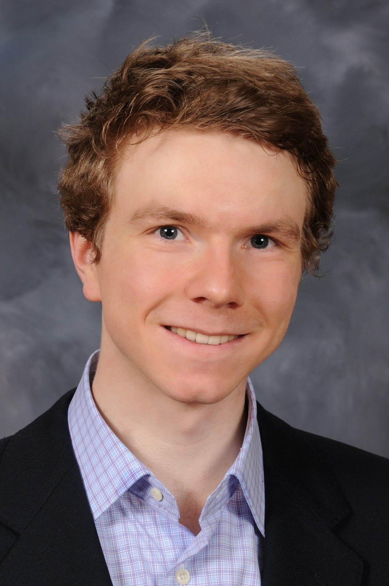

Medicine
I am an MD-PhD candidate at Harvard Medical School and MIT, currently pursuing my PhD in biomedical engineering and computer science through the Health Sciences and Technology program at MIT. I am interested in psychiatry, neurology, machine learning, computer vision, natural langauge processing, and human-computer interactions. In collaboration with my PhD advisor Gabriel Kreiman and others, I am conducting research on new tools and techniques for teaching medical/health professional students using machine learning models, machine learning algorithms that learn without forgetting (continual learning), and applications of machine learning in psychiatry. Ultimately, I hope to apply artificial intelligence to improve health outcomes for patients and help educate the next generation of clinicians.